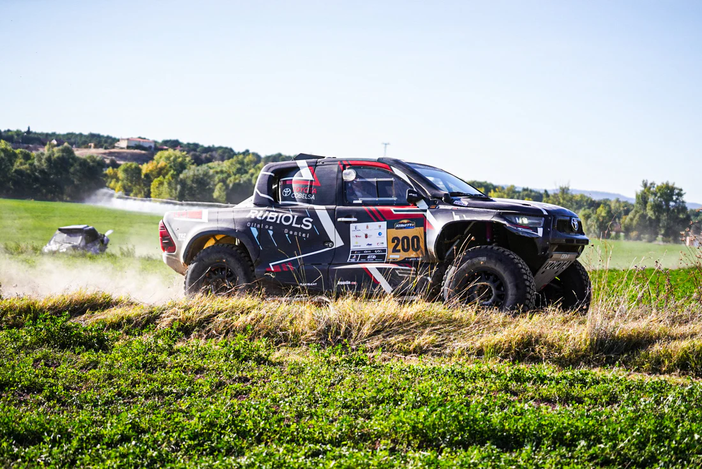

La Baja TT Cuenca ha obtenido un gran éxito de inscripción, con más de 140 equipos confirmados en el rally. Así, los mejores del panorama nacional y, este año por primera vez, los más brillantes y competitivos del ámbito internacional se darán cita en Cuenca a partir del 7 de mayo. La carrera, que se desarrollará del 7 al 10 de mayo por la Serranía Conquense, es la primera prueba de la Copa Europea de Bajas y, además, la tercera del Campeonato de España de Rally TT. En la Baja TT Cuenca compiten los primeros espadas de la Copa Europea de Bajas de la FIA. Hasta Cuenca llegan los equipos europeos más competitivos. El lituano Benediktas Vanagas, uno de los pilotos privados más rápidos del Dakar, ha confirmado su participación en la Baja TT Cuenca. Vanagas, junto a Aisvydas Paliukėnas, con su Toyota Hilux EVO, pretende liderar el título europeo absoluto de una Copa compuesta por ocho pruebas, de las que solo contarán los seis mejores resultados de cada equipo. Para Vanagas, la Copa Europea de Bajas es una competición de constancia, donde hay que equilibrar la velocidad pura y la fiabilidad mecánica en los terrenos más exigentes de Europa. Otro de los internacionales que estarán en la salida de la Baja TT Cuenca son los portugueses João Ramos y Pedro Ré, también con Toyota Hilux. João Ramos ha señalado que la prueba recorre un impresionante paisaje natural de Castilla-La Mancha y que la afrontará con ambición y concentración, consciente de que será el comienzo de una temporada muy competitiva, en la que es importante obtener una buena clasificación de cara al resto de las carreras de la Copa Europea de Bajas. Asimismo, los lusos José Rogeira y Paulo Marques estarán en la línea de salida con su Ford Ranger T1. Por su parte, el español Luis Recuenco, copilotado por Daniel Cámara, peleará por la victoria en la primera cita del europeo. El conquense, con su Toyota Hilux EVO, además de competir en la Copa Europea de Bajas, intentará ser el mejor del Campeonato de España, al que también aspira. Otros equipos a seguir son el formado por la piloto de los Emiratos Árabes Aliyyah Koloc y el polaco Marcin Pasek, con su Red-Lined REVO GTR; los portugueses Alejandro Martins y David Monteiro, con el Mini JCW Rally; y los polacos Mariusz Wiatr y Lukasz Laskawiec, con el Ford F-150. XII edición del Rally de Cuenca, tercera prueba del nacional, al que los equipos llegan muy igualados a puntos. Santiago Carnicer defenderá su corona. Además, el Rally de Cuenca es la tercera cita del Campeonato de España, al que llega Juan Gassó como líder, seguido muy de cerca por Eduardo Pons, que está a tan solo tres puntos de diferencia. En tercer lugar provisional saldrá Jesús Fuster y, en cuarto y quinto lugar, empatados a puntos, tomarán la salida João Ferreira y Rafael Muñoz. En Cuenca habrá que estar muy atentos a Santiago Carnicer y Sergio Peinado, con su poderoso Toyota Hilux. El castellonense, vigente campeón de España, no cejará en su intención de revalidar su corona, que ostenta desde hace tres años consecutivos. Ante esta excelente inscripción, Víctor Alijas, organizador de la Baja TT Cuenca, ha manifestado: “Cuenca va a sonar con fuerza en toda Europa, pero además queremos que los equipos se lleven el mejor recuerdo deportivo de España. Será una carrera exigente, pero justa y con un recorrido espectacular”. La cita cuenta con el patrocinio oficial de la Junta de Comunidades de Castilla-La Mancha, el Ayuntamiento de Cuenca y la Diputación de Cuenca.